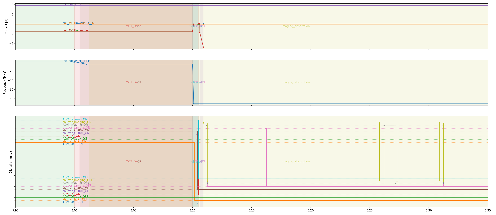

Wigner_Time
Timeline creation and management for open-loop control in AMO experiments and beyond. Keep scrolling for a quick overview.
Status
This is currently an alpha release. Usable, but subject to breaking changes. We will release the first stable version soon.
Optional dependencies (package extras)
performance_and_export(Recommended): Installspyarrowfor memory management, sharing between systems and export toparquet.display: Installsmatplotlibandpyqtfor visualization.parallel_processing: Installspolarsfor parallel dataframe manipulation. (WARNING: This is currently not used, but will be in the future)
Developer Notes
Tests can be run from the root folder with
poetry run pytest
Getting Started
Abstract
We introduce Wigner Time, an approach and Python package for defining and
manipulating experimental timelines in real-time open-loop control systems.
Fundamentally, procedures are expressed functionally and implemented tabularly, such that the core timelines can be represented with in-memory databases, e.g. pandas.DataFrame. The associated functional-style API is clear, flexible, and integrates well with the broader scientific Python ecosystem. The package has been optimized for ADwin-based quantum-optics experiments, but is broadly applicable to any experimental domain requiring precisely timed, multi-device control.

Why not ADbasic?
ADbasic combines the power and precision of a low-level programming language with the intuitive clarity of a low-level programming languge.
Why Wigner Time?
Easy (separation of concerns)
So much of physics is choosing the right level of abstraction.
Wigner Time allows you to use a normal and popular programming language to design your experimental timelines, while still utilizing the low-level features of other languages when you really need it.
Don’t write ADbasic unless you need to!
’Simple’
Easy tools often become complicated, but Wigner Time has been carefully designed so that all conveniences are optional. You can always drop down a level of abstraction to manually implement a new feature - to the point of just adding CSV tables.
Flexible
By using a functional, data-oriented and bottom-up programming approach to timeline creation, Wigner Time makes it very easy to add and substract changes from the timeline and so can repsond to fast-changing lab requirements.
Portable
The essential data is always accesible and transferrable to any other language or collaborator
- even a spreadsheet!
Robust
Implemented ontop of the `pandas` system, the most widely-used data science package.
Graphical display
Easily generate and investigate your timeline.
How it works?
Wigner Time is based around the idea of a ’timeline’, which is, at heart, simply a table of rows and columns. The columns detail ’parameters’, e.g. ’variable’ (the name of a quantity), ’time’, ’value’, ’context’ (a concise description of a real-world situation, e.g. ’OpticalTrap’ )
- Add more parameters by adding columns
- Add more operations by adding rows
By boiling the design down to a ’table’ as the foundation, then we can benfit from decades of database development, particularly in-memory database-like systems like `pandas`. Therefore, when in doubt, the user can simply manipulate their timeline using the well-developed `pandas` ecosystem. For most operations however, even this won’t be necessary as wignertime provides layers of conveninece functions ontop of this for designing open-loop experiments.
Example (For ADwin systems)
You want to digitally control an optical shutter and AOM.
For digital channels, simply name the ADwin ports using standard Python lists. These keep track of the physical connections.
from wigner_time.adwin import connection as adcon
from wigner_time import device
from wigner_time import conversion as conv
connections = adcon.new(
["shutter_MOT", 1, 11],
["AOM_MOT", 1, 1])
devices = device.new(
["lockbox_MOT__MHz", 0.05, -200, 200],
[
"AOM_MOT__transmission",
conv.function_from_file(
"resources/calibration/aom_calibration.dat",
sep=r"\s+",
),
0.0,
1.0,
],
)
N.B. The use of pandas.DataFrame for convenient edits.
import timeline as tl
initial = tl.create(
t=1e-6,
context="ADwin_LowInit",
shutter_MOT= 1
AOM_MOT=0,
)
final = init
final['context']="ADwin_Finish"
And any key processes…
MOT = tl.update(
shutter_MOT= 0
AOM_MOT=1,
context="MOT",
)
detuned_growth = tl.ramp(
lockbox_MOT__MHz=-5,
duration=10e-3,
),
Due to the (hopefully) sensible defaults, each component, e.g. `ramp`, will automatically join onto the end of the previous operation in a causal chain.
tline = tl.stack(
initial,
MOT,
detuned_growth,
final
)
The timeline can then be exported to an ADwin-compatible format.
from wigner_time.adwin import core as adwin
adwin.to_data(tline)
Future?
- Official support for NI systems
- Graphical input
- Feature requests. Post an issue!